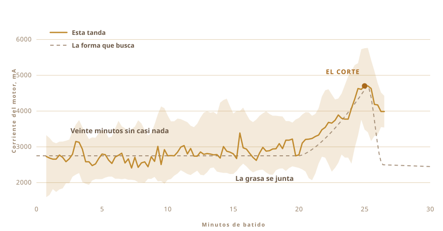

01
Solo lo había comido
El ghee que yo conozco venía de los pueblos. En botes reaprovechados, de gente que lleva tanto tiempo haciéndolo igual que allí nadie lo considera una técnica.
No sabe como la lata del supermercado.
Y yo no había hecho ni una sola tanda. No sabía cuánto hay que dejar la leche, ni lo frío que debe estar el yogur, ni qué sonido tiene que hacer la olla cuando está listo.
02
Empieza con yogur, no con nata
Casi todo el ghee industrial empieza con nata. La forma tradicional empieza un día antes, a veces dos, con nata, en realidad leche entera reducida, fermentada hasta volverse yogur y dejada agriar toda la noche.
Ese agriado es lo decisivo, porque si te lo saltas lo que sale es mantequilla clarificada. Está muy buena, pero no es ghee.

03
Dos días en la encimera
Leche templada, una cucharada del yogur de ayer bien removida, y después lo dejas en paz toda la noche y que las bacterias hagan lo suyo. El mío estuvo fuera dos días.
Eso es fermentación, y es el paso que la versión comercial se salta. Los cultivos vivos, sobre todo lactobacilos, van atravesando la lactosa y la convierten en ácido láctico. La leche espesa. Se agria. Por la mañana ya es otra cosa.
De aquí viene todo lo bueno. Lactosa ya rota, que sienta mejor. Grasas y proteínas más disponibles. Ácido butírico, el ácido graso de cadena corta del que vive de verdad la pared intestinal, y hay más en el ghee hecho así que en el ghee montado deprisa con nata dulce.
El Ayurveda lleva muchísimo tiempo recetando justo esta versión.
Lo que sí puedo decir es que el olor lo da el cultivo. Ese olor es casi toda la razón para meterse en todo esto.

04
El método tiene nombre
Bilona. Yogur en una olla, dentro un batidor de madera, y luego lo trabajas adelante y atrás hasta que la mantequilla se rinde y sube.
El batidor lo hice yo. Los que encontraba por internet iban encolados, y ninguno me decía qué cola era. Esa cosa pasa media hora dentro de tu comida, así que no pensaba jugar a adivinar. Madera dura, tornillos de acero inoxidable, atornillado a un eje de agitador que ya tenía en un cajón.
Cuatro brazos y una abrazadera de acero que los mantiene a escuadra. Es todo tornillos, así que se vuelve a desmontar.


Lleva más o menos media hora y durante casi todo ese rato no pasa nada interesante. Que es exactamente el tipo de tarea que sueñas con endosarle a otra cosa.

05
Así que pregunté
La gente que de verdad sabe hacer esto no trabaja con recetas, y ninguno de ellos estaba en mi cocina. Así que las preguntas se fueron a una ventana de chat.
Cuánto fermentar. Lo frío que hay que mantener el yogur. A qué velocidad puedes girarlo antes de que el rozamiento caliente la olla y estropee la mantequilla. Cada respuesta abría otras tres.
Y entonces hice la que de verdad quería hacer. ¿Podrías hacerlo tú?
La pregunta dejó de ser cómo hago ghee. Pasó a ser podrías hacerlo tú por mí.
06
La Bestia
Un taladro a batería. El batidor, de un cajón y de una ferretería. Una fiambrera de plástico para la electrónica, una tabla de cortar como espinazo, y un botón de parada grande y amarillo, porque cualquier cosa con motor debería tener uno.
No costó casi nada y se le nota. Y en cierto modo de eso se trata.

- MotorTaladro a batería, sujeto con una mordaza
- BatidorMadera dura y acero inoxidable, hecho y no comprado
- CerebroRaspberry Pi, registrando una vez por segundo
- SentidoCorriente del motor para el batido, una sonda de temperatura para la cocción
- ParadaUn botón grande, cableado para cortar la corriente
07
Girar es la parte fácil
Girar yogur lo hace cualquiera. Lo difícil es saber cuándo parar.
Si paras pronto tienes espuma espesa. Si te pasas, devuelves la mantequilla al suero y la pierdes. La ventana se mueve según la grasa, la temperatura y cómo vaya el día.
Nadie cronometra esto. Se escucha. El chapoteo pasa de un remolino uniforme a un golpeo desigual, y ahí es cuando metes la mano.

08
Un sentido, y solo uno
Así que le di un sentido. Vigila con cuánta fuerza tira el motor.
Veinte minutos, nada. La carga se queda por los 2700 mA y va dando bandazos. Entonces la grasa empieza a juntarse y el taladro tiene que empujar algo más espeso. Sube hasta 4700 y aguanta ahí un momento, y entonces la mantequilla suelta el líquido y la carga cae.
Sin cámara, sin modelo, sin nada ingenioso. Un número que sube y luego baja.

09
Paró ella sola
Estuvo girando. Me fui a hacer otra cosa, y cuando volví ya se había apagado sola.
Granos de mantequilla de un amarillo pálido en suero turbio. Nadie le dijo la hora. Lo dedujo de lo único que podía notar.

10
Después vuelven las manos
Juntar los granos y apretarlos hasta formar una bola. Enjuagar en agua fría, una y otra vez, hasta que el agua deje de salir turbia.
Cada gota de suero que te dejes se quemará en el paso siguiente. Esta parte no la automaticé, y tampoco quería.


11
El segundo sentido
La carga del motor le decía al montaje cuándo parar. La cocción plantea otro problema, porque ahora no buscas un momento, intentas sostener uno.
Así que la olla va a una placa con una sonda de temperatura dentro, y un regulador que enciende y apaga la placa para mantener el número donde lo has puesto. Lo puse en 250 F, unos 121 °C, y ahí se quedó alrededor de una hora.
Una persona que vigila una olla durante una hora se despista. Al regulador no le entra el aburrimiento.

12
Una hora mirando el color
Mantequilla a la olla, y a partir de ahí va prácticamente sola.
Se funde. Hace espuma blanca y ruidosa. El agua se evapora y el ruido se apaga. Los sólidos lácteos se van al fondo y se ponen marrones, y el olor pasa de mantequilla a algo tostado. Cuando la olla se queda en silencio y el líquido sale transparente, está terminado.
Aun así lo miré casi todo, porque da gusto mirarlo. Pero nada de lo que hice cambió cómo salió.


13
Ghee
Transparente, ámbar, y huele como los botes de los que comía de pequeño. Era la única prueba que tenía, y la pasó.

Entró en los botes caliente y transparente. Al día siguiente había cuajado pálido y granuloso.
Les puse una etiqueta. La palabra que lleva es ghee en nepalí, y el código de al lado te devuelve a esta página.

La primera tanda que he hecho en mi vida. En realidad no la hice yo.
14
Nueve botes la segunda vez
La primera tanda dio dos botes y eso fue todo. Esta llenó la barandilla.
Nueve botes. Dos altos de tapa de rosca cerca de la cámara, seis de cierre de clip por el medio, y uno pequeño justo al fondo, junto al último poste.

La etiqueta ahora es otra. Los dos primeros botes llevaban una de papel rosa con OUR STORY impreso arriba. Estas son de película transparente, así que el ghee se ve por detrás de las letras, y el código de al lado te sigue devolviendo a esta página.


Cuajó del mismo amarillo pálido que el primer lote, cosa de la que no estaba seguro.
15
Qué quiero hacer después
Ahora mismo la máquina sabe dos cosas. Cuándo dejar de batir y qué temperatura mantener.
Lo siguiente que quiero es darle ojos y oídos. Una cámara, para que vea romperse la espuma y ponerse marrones los sólidos y elija ella el calor en vez de sostener un número que le he dado yo. Y un micrófono, porque buena parte de lo que te dice que el ghee está listo es que la olla se queda en silencio.
El taladro probablemente podría hacer un segundo turno. En cuanto la mantequilla está en la olla hay que removerla, y ya hay un motor ahí mismo sin hacer nada.
Y luego el bucle. Cambiar el tiempo de fermentación, cambiar la velocidad, probar lo que sale, quedarse con lo que funcionó, y otra vez. Treinta tandas y acabaría en algún sitio donde a mí no se me habría ocurrido mirar.
Yo nunca supe muy bien dónde mirar, de todos modos.
De qué está hecha, dónde se mide y qué vigila realmente el montaje.